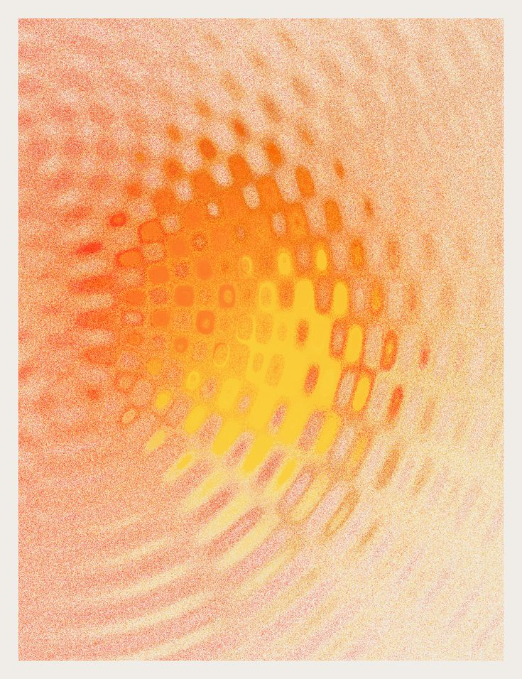

Product Video
Think it. Say it. Draft it.
The problem
Most design tools wait for you to know what you want. Draft works before that moment.




What it does
Say the idea out loud
Draft is listening. Speak the feeling, the reference, the half-thought — and it turns into something real.
Three directions, instantly
Every prompt comes back as three distinct creative directions. Pick one, combine them, or start over.
Built for how designers actually think
Not a blank canvas. Not a prompt box. A native iOS tool that works the way your brain does.